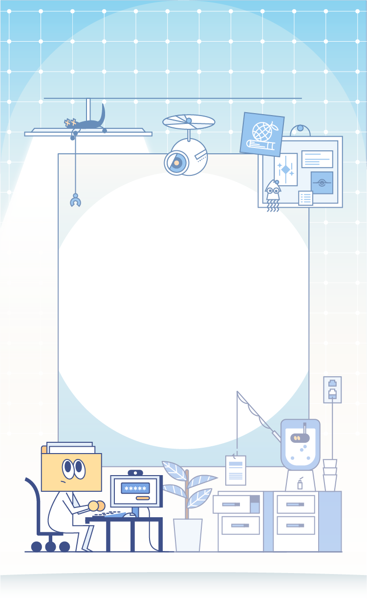
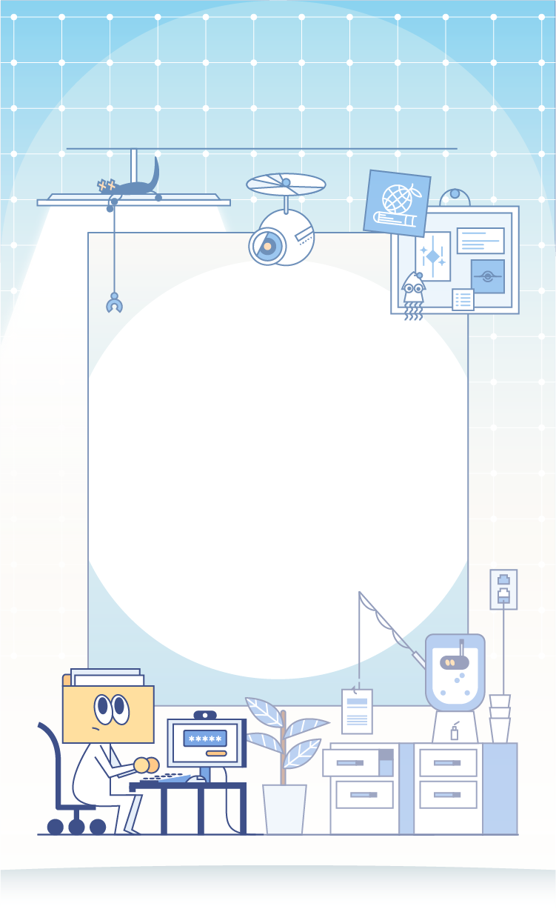

Objetivo
Desarrollar en el participante los conocimientos fundamentales sobre la seguridad de la información, así como fomentar los hábitos de uso responsable de los activos de información e instruir en la prevención de incidentes de seguridad.
Descripción
Este curso proporcionará una base en seguridad de la información, abordando conceptos esenciales para proteger la integridad, confidencialidad y disponibilidad de la información en entornos digitales.
Los participantes explorarán temas como control interno, normatividad, seguridad física, lógica y administrativa, ISO/IEC 27000, gestión del riesgo, ciberamenazas, y arquitecturas de seguridad. Además, se examinarán aspectos prácticos, incluyendo ingeniería social, identidad digital, phishing, contraseñas seguras, malware y cifrado.
Este curso es esencial para profesionales y entusiastas, que buscan comprender y aplicar medidas efectivas de seguridad en el mundo digital actual.
Contenido
Tema 1. Introducción a la seguridad de la información
Tema 2. Seguridad de la información
Tema 3. Ciberseguridad
Tema 4. Aplicación de la seguridad de la información
Expertos en contenido
Rigo Daniel Salazar Falfán
Universidad Veracruzana
Nombre
Universidad Veracruzana
Rigo Daniel Salazar Falfán
Universidad Veracruzana
Licenciado en Informática por la Universidad Veracruzana. Diplomado en seguridad de la información por parte de la Universidad de Chihuahua.
Segunda edición del Curso Internacional para CISO de Universidades Iberoamericanas por parte de MetaRed.
Experiencia de 7 años laborando en el departamento de redes y telecomunicaciones, participando en diversos proyectos de innovación del área.
En la actualidad, es responsable del departamento de Seguridad y Monitoreo de la Universidad Veracruzana, el cual funge como un equipo de respuesta de incidentes de ciberseguridad, el U V-CSIRT. Así mismo, es colaborador en el grupo de seguridad de la información de ANUIES-TIC y colaborador en el grupo de Ciberseguridad de Metared México.
Cursos de seguridad como CISSP, Network Defender, Ethical Hacking, Pentesting, Computer Hacking Forensic Investigator, NIST, ISO 27032, ISO 27035, Seguridad y gestión en Redes.
Nombre
Universidad Veracruzana
PENDIENTE
Referencias bibliográficas
Básicas
PENDIENTE
Complementarias
PENDIENTE
Instrucciones: Haz clic en el botón para descargar la información.